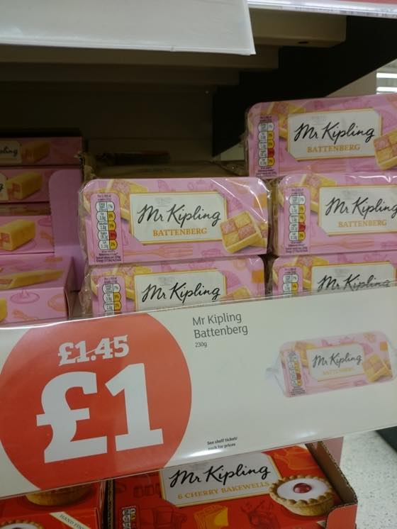
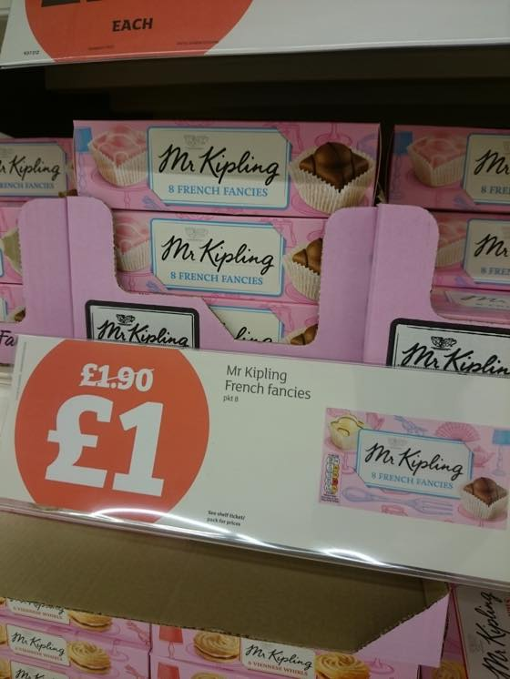
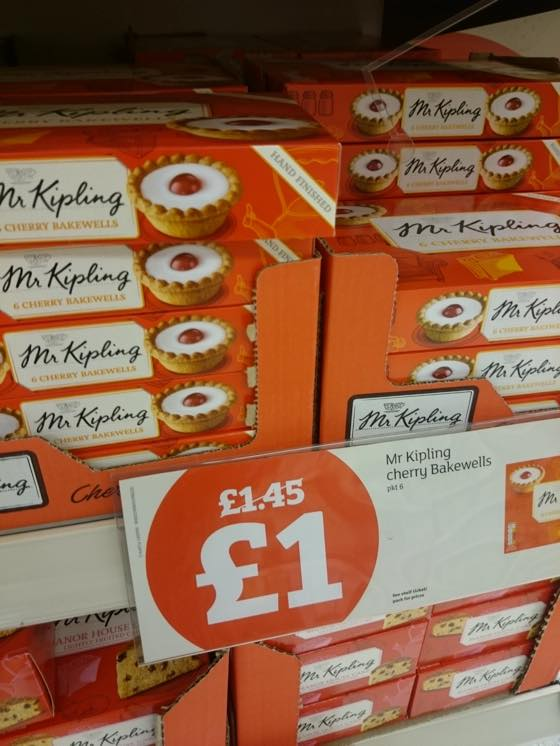
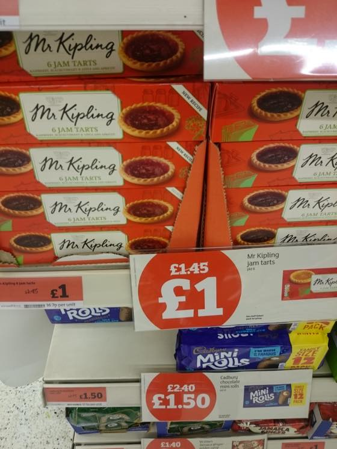
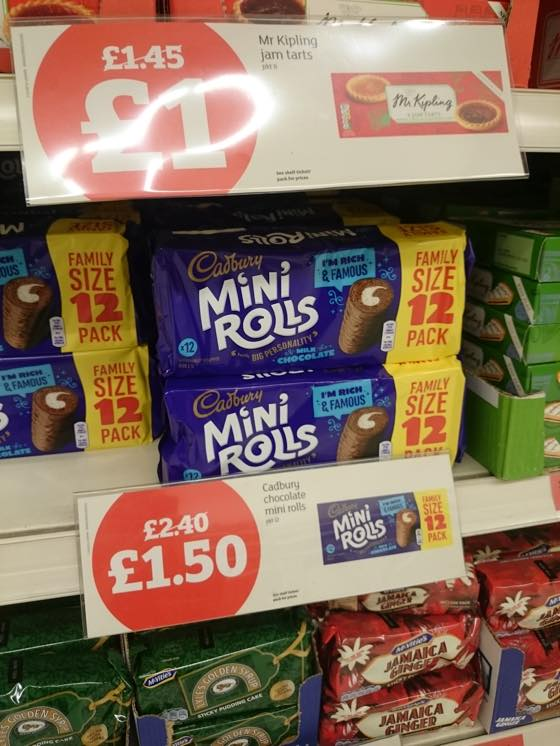
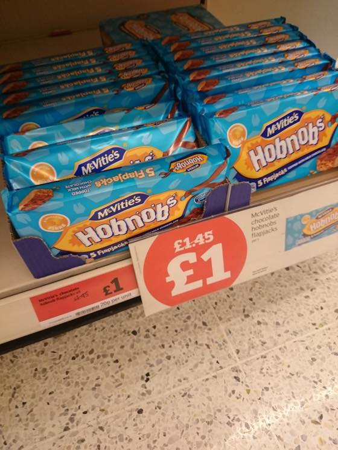

주위에서 영국음식이 진짜 글케 맛없어? 라고 물어보면
조리법이 단순해서 그렇지 맛난것도 있다 - 라고 대답하는 편인데 ㅋㅋㅋ
여기에 추가하자면 영쿡서 맛난건 보기만해도 살이 팍팍찔거같은 음식이 많습니다;;;
스콘이라던가 파이라던가... 케키도 벽돌두께로 나옴 ㅋㅋㅋㅋㅋㅋㅋ
아 그리고 감자(칩스)는 정말 맛나요//
슈퍼갈때마다 행사코너에서 한참을 구경하는 달다구리들
1파운드 한다고 한봉지 사왔다간 당일날 끝장낼 자신이 있기때문에;;; 자주 구매하진 않지만 좋아하는 간식들입니다 :3

Battenberg
바텐버그 케이크 / 두가지 색 케이크에 마지팬(mazipan)을 씌운 것

French fancies

Cherry Bakewells
강렬한 설탕맛.....ㅋㅋ

Jam tarts
위에거랑 비슷한데 안에 잼이 들어있습니다 :3

Chocolate mini rolls
커피나 우유랑 먹으면 최고//

최근 맘에든 Chocolate hobnobs flatjacks
포스팅하다보니 한국 과자값 비싼게 실감나네요;;
한국 편의점서 치토스 자갈치 등등 엄청 사먹었는데 ㅋㅋㅋㅋㅋㅋㅋ
봉지과자는 한국이 종류가 더 다양한거 같습니당
여긴 감자칩 아님 나쵸 종류가 대부분......OTL
담번에는 막스앤스펜서 간식 탐방을 해볼렵니다 ^^